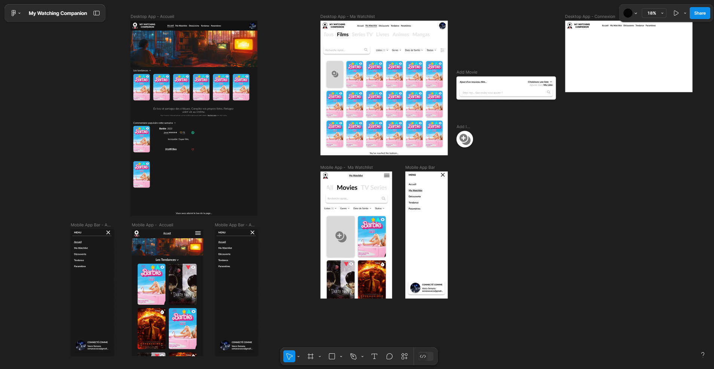
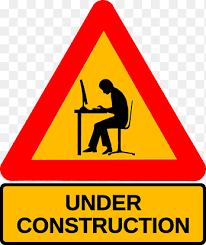

My Watching Companion (client léger)
Par passion du cinéma
Le projet My Watching Companion consiste en la création d’une application web permettant aux utilisateurs de gérer leurs listes de visionnage de films et séries.
L’application vise à offrir un espace personnalisé où chaque utilisateur peut enregistrer, classer et retrouver facilement ses contenus culturels préférés, tout en obtenant des recommandations basées sur ses goûts.
Quelque images du projet !
La page d'Accueil :

Page d'Accueil - Partie 2 :

Page de Connexion :

Page d'Inscription:

Maquettes Figma :

Les liens utiles du client léger :
Gest Stock (client lourd)
Une aide précieuse pour les entreprises
Le projet Gest Stock consiste en la création d’une application de bureau permettant aux utilisateurs de gérer leurs stock.
L’application vise à offrir un espace personnalisé où chaque utilisateur peut gérer le stock des ses produits comme il l'entend.
Quelque images du projet !
La page de Connexion :

La page d'Accueil :
La page Produit :
La vue du stock des Produits :